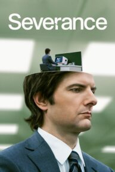

Merhaba ben Büşranur Altun. istanbulda yaşıyorum.22 yaşındayım.Bilgisayar Mühendisliği bölümü okuyorum
Severance
Severance:Lumen Industries isimli hayalî şirket ve çalışanları etrafında şekillenecek dizide, iş ve hayat arasındaki dengeyi yeni bir seviyeye taşıyan “ikiye ayırma prosedürü” isimli bir işlem konu ediliyor. Bu prosedür sayesinde Lumen Industries çalışanları iş ve işle ilgisi olmayan anılarını, hafızalarında birbirinden ayrı şekilde muhafaza edebiliyor.